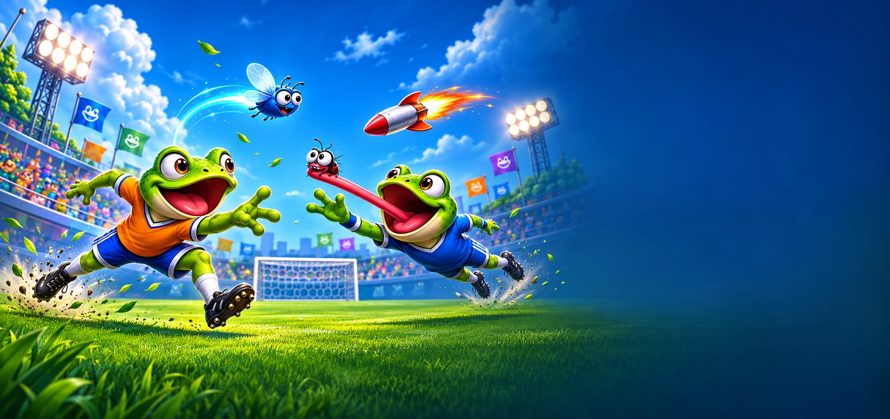
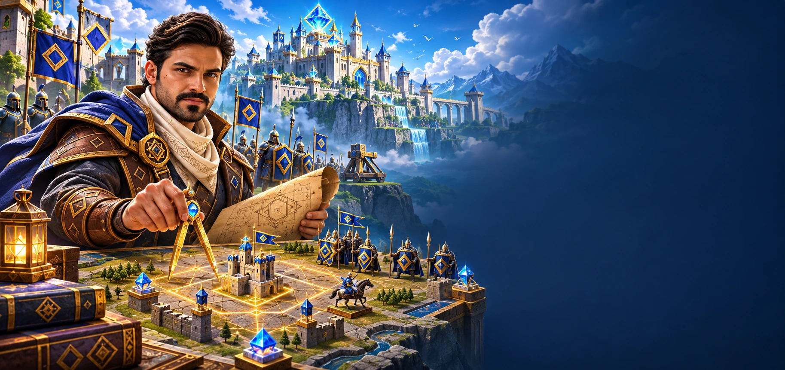
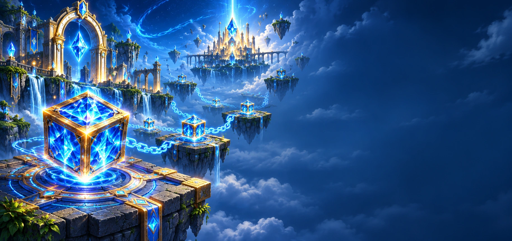
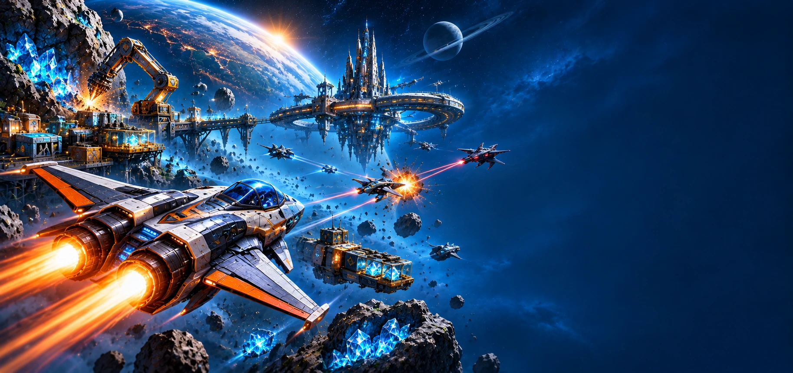
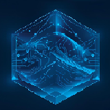

OPEN WORLD · LIFE SIMULATION
Freeverse
زندگی، اقتصاد، شغل، شهر و تصمیمهایی که مسیر داستان تو را عوض میکنند.
Freeverse
در Freeverse وارد یک جهان باز میشوی که در آن شغل، اقتصاد، تولید، خدمات عمومی و تعاملات اجتماعی همه به هم متصلاند.
هر بازی، یک دنیای مستقل
صفحه اختصاصی هر بازی شامل معرفی، تصاویر، وضعیت انتشار و مسیرهای رسمی دریافت است.
Freeverse
شهر، شغل، اقتصاد، کسبوکار، تولید، خدمات عمومی، قانون و انتخابهایی که در یک جهان متصل به هم اثر میگذارند.
صفحه Freeverse ←FlyFootball
رقابت رنگی و سریع دو قورباغه؛ زبان، مگسها، مگسکش، راکت و حالتهای Cup، League و Online هسته تجربه را میسازند.
صفحه FlyFootball ←GeometricStrategy
نبرد تاکتیکی با ارتش هندسی، پیشرفت مرحلهای، ساختوساز و استحکامات؛ طراحی برای تصمیمگیری، نه شلوغی بصری.
صفحه GeometricStrategy ←ChainTrace
رد زنجیر یک بازی فکری مرحلهای است؛ سرنخها را بررسی کن، اتصال درست را پیدا کن و زنجیر را کامل کن. مسیر درست سبز میشود و انتخاب اشتباه با زنجیر قرمز خودش را نشان میدهد.
صفحه رد زنجیر ←
Void Reign
فرمانروایی در خلأ؛ کاوش با سفینه، استخراج منابع، نبرد فضایی و تلاش برای بقا در جهانی که تصمیمها و خطرها اهمیت دارند.
اطلاعات بیشتر Void Reign
BOSA – Base
اطلاعات پلاگین Unity حذف نشده است. BOSA صفحه مستقل خود را دارد تا معرفی ابزار، تصاویر و اطلاعات مربوط به آن از صفحات بازیها جدا و قابل توسعه بماند.
ورود به صفحه پلاگین ←